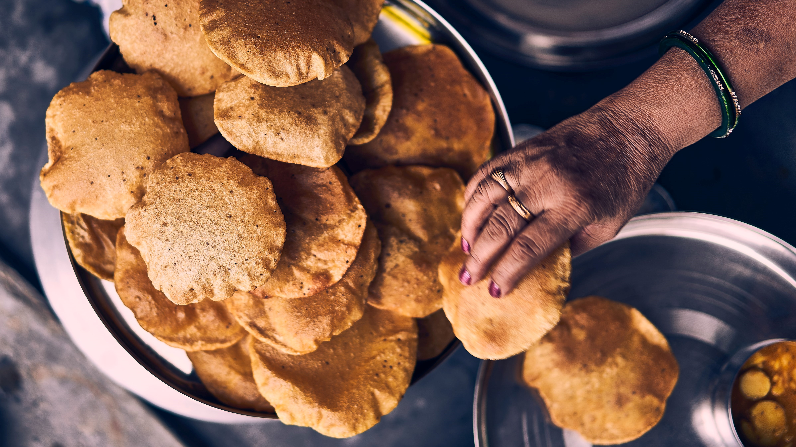

Indian cuisine consists of a variety of regional and traditional cuisines native to the Indian subcontinent. Given the diversity in soil, climate, culture, ethnic groups, and occupations, these cuisines vary substantially and use locally available spices, herbs, vegetables, and fruits. Indian food is also heavily influenced by religion, in particular Hinduism, cultural choices and traditions. Centuries of Islamic rule, particularly by the Mughals, also introduced dishes like samosa and pilaf. Historical events such as invasions, trade relations, and colonialism have played a role in introducing certain foods to this country. The Columbian discovery of the New World brought a number of new vegetables and fruit to India. A number of these such as potatoes, tomatoes, chillies, peanuts, and guava have become staples in many regions of India. Indian cuisine has shaped the history of international relations; the spice trade between India and Europe was the primary catalyst for Europe's Age of Discovery. Spices were bought from India and traded around Europe and Asia. Indian cuisine has influenced other cuisines across the world, especially those from Europe (especially Britain), the Middle East, Southern African, East Africa, Southeast Asia, North America, Mauritius, Fiji, Oceania, and the Caribbean.
For Batter / Dosa Pindi - 2 cups rice
½ cup urad Dal
⅓ cup Chana Dal
1 tsp Methi Seeds / Fenugreek
For aloo masala
Oil - 1 tbsp
Sarso - 1 tsp
Curry leaves - 2 sprig
Adrak - ½ inch
Hari Mirchi - 2-3
Onion - sliced
Haldi - ½ tsp
Boiled Aloo - 5
Red Chilli Powder - 1 tsp
Salt - to taste
Dhaniya Fresh - 1 tbsp
Namak- as per taste
Oil - to roast dosas
Preparation time: 10 minutes
Cooking time: 25-35 minutes
Serves: 4
Course: Main
Cuisine: Udupi, Karnataka (Southern Indian)
Ingredients: 🍛
For the Masala
3 tbsp Coriander seeds, धनिया के बीज
1 tbsp Cumin seeds, जीरा
2 tbsp Urad dal, उड़द की दाल
1 tbsp Chana dal, चना दाल
½ tsp Fenugreek seeds, मेथी दाना
5-6 dry Red chillies, सूखी लाल मिर्च
1 ½ tbsp Oil, तेल
½ tsp Asafoetida, हींग
¼ cup fresh Coconut, white part, grated, नारियल कसा हुआ
¼ cup Water, पानी
For Sambar :
½ cup Toor Dal, तूर दाल
2 cups Water, पानी
Salt to taste, नमक स्वादअनुसार
½ tsp Turmeric powder, हल्दी पाउडर
¼ tsp Red chilli powder, लाल मिर्च पाउडर
2 cups Water, पानी (to cook vegetables)
2 Drumsticks, remove edge and cut into 1 inch long, सहजन
2 cups Pumpkin, peeled, cut into cubes, कद्दू
4-5 Aubergine, cut into quarters, बैंगन
4-5 Okras, cut into 1 inch, भिंडी
¼ cup Tamarind pulp, इमली का गूदा
Salt to taste, नमक स्वादअनुसार
4 heaped tbsp Sambar Masala, साम्बर मसाला
2 tbsp Jaggery, grated गुड़
For tempering :
2 tbsp Oil, तेल
1 tsp Mustard seeds, राय
Pinch of Asafoetida, हींग
2 dry Red chillies, broken, सूखी लाल मिर्च
2 sprig Curry leaves, करी पत्ता
Method ♨️
For Masala :
●In a plate take, coriander seeds, cumin seeds, urad dal, chana dal, fenugreek seeds and dry red chilli.
●Heat oil in a pan, add all dry spices and dal saute well.
●Add asafoetida and saute it well. Add fresh coconut and mix everything well, add little water to make a paste.
●Transfer this mixture into a grinder and grind it into a smooth paste.
●Transfer the paste into a bowl and keep it aside for future use.
For Sambar :
●In a pressure cooker, add toor dal, water as required, salt to taste, turmeric powder and red chilli powder.
●Cover it with the lid and pressure cook until it's done.
●In another saucepot, add 2 cups of water. Drumstick, salt to taste, pumpkin and cook for 5-6 minutes.
●Now , add aubergine, okra, cooked toor dal and mix well.
●Add a little water, tamarind pulp, salt to taste and prepare sambar masala and mix everything well and let it cook for 5 minute on medium flame.
For Tempering :
●Heat oil in a pan.
●Add mustard seeds, asafoetida, dry red chillies and curry leaves. Let them splutter.
●Pour this tempering over the prepared sambar and mix well.
●Finally, add chopped jaggery and give a nice stir.
●Once the sambhar has reached the correct thickness, turn off the flame and serve hot along with rice.
Prep time: 20-25 minutes (doesn’t include the soaking and fermentation time)
Cooking time: 20-25 minutes
Serves: 12-15 dosa (depending on its size)
For dosa batter:
Ingredients:
• Ukdha chawal 200gm
• Urad dal 50gm
• Methi seeds 1/4 tsp
• Besan 50gm
• Sooji 50gm
• Salt to taste
Method:
• Wash the dal and rice together at least 3-4 times or until the water is clears, add methi
seeds to it and let them soak for an hour at least.
• After they have been soaked, drain all the excess water and grind it into fine paste using
a mixer grinder, make sure you add little quantities of water in batches while grinding, you
don’t want the paste to be extremely thin.
• In a separate bowl combine besan, sooji, salt and gradually add water & whisk until you get
a smooth paste.
• Now add the grinded rice and urad dal mixture to the besan and sooji paste and mix everything
well using a whisk, gradually add water and make a thick lump-free batter, cover it and let it
rest in a warm place for it to ferment for at least 3-4 hours.
• After the batter gets fermented check the consistency, it should be thick enough to spread
easily, add some water and whisk it again if it’s too thick.
• Check for salt and adjust accordingly, your dosa batter is ready.
For jini dosa masala:
Ingredients:
• Butter 1 tbsp
• Oil 1 tsp
• Cumin seeds 1/2 tsp
• Onions 2 medium size (chopped)
• Tomatoes 2 medium size (chopped)
• Capsicum 1 cup (chopped)
• Cabbage 1 cup (shredded or chopped)
• Schezwan chutney 4 tbsp
• Ketchup 2 tbsp
• Red chilli sauce 1 tbsp (optional)
• Salt to taste
• Garam masala 1 tsp
• Kashmiri red chilli powder 1 tbsp
Method:
• Set a tawa on high heat and add butter, oil and cumin seeds, allow it to crackle.
• Further add the onions, stir & cook until the onions turn translucent.
• Once the onions turn translucent, add the chopped tomatoes and sprinkle some salt to taste.
• Further add capsicum, cabbage followed by the remaining sauces, adjust salt to taste, add
garam masala and kashmiri red chilli powder, mix everything well and cook for 1-2 minutes,
use a potato masher to mash everything lightly.
• Your masala for jinni dosa is ready.
For jinni dosa:
Ingredients:
• Dosa batter as required
• Masala as required
• Paneer 50-80gm (grated)
• Processed cheese as required
• Fresh coriander 1 tbsp (chopped)
• Spring onion green 1 tbsp (chopped)
Method:
• Set a dosa tawa on high heat and let it heat nicely, adjust the temperature of the tawa
by sprinkling some water on to it, once the tawa gets hot enough put a spoonful of the
dosa batter on the tawa and start moving the spoon in a circular motion outward to form
a dosa, spread the batter evenly and make a thin layer.
• Lower the flame and add the masala as required and spread it evenly across the dosa.
• Further grate some paneer on the dosa along with processed cheese, add fresh coriander and
spring onion greens.
• Once the dosa get cooked, remove it and transfer it onto a chopping board or a plate and
cut it into thick strips and roll it.
• Your jinni dosa is ready.
• Grate some cheese on top of it while serving and serve with coconut chutney and schezwan chutney.
COCONUT CHUTNEY :
Preparation time : 10 minutes
Cooking time : 10 minutes
Servings : 2
Ingredients :
1 whole Coconut (नारियल)
3-4 fresh Green Chillies (हरी मिर्च)
½ tsp Cumin Seeds (जीरा)
2 tbsp roasted Chana (भुना चना)
6-8 Cashew Nuts (काजू)
1 inch Ginger (अदरक)
Salt to taste (नमक स्वादानुसार)
½ Lemon Juice (नींबू का रस)
For Tempering :
2 tbsp Coconut Oil/Refined Oil (नारियल तेल या रिफाइंड तेल)
1 tsp Mustard Seeds (सरसों के बीज)
¼ tsp Fenugreek Seeds (मेथी दाना)
2 tbsp Gota Urad (गोटा उड़द)
1 tbsp Chana Dal (चना दाल)
2 dry Red Chillies (सूखी लाल मिर्च)
1 sprig Curry Leaves (कड़ी पत्ता)
Process :
In a grinder jar add coconut, green chillies, cumin seeds, roasted chana, cashew nuts, ginger,
salt and grind it into a fine paste.
Meanwhile heat oil in a pan and add mustard seeds, fenugreek seeds, gota urad, chana dal, dry
red chillies, curry leaves and fry until nutty brown.
Now remove the coconut paste in a bowl add lemon juice and half of the tempering then mix everything properly.
Put in a serving bowl and garnish with remaining tempering
Ingredients for Roasting Sooji -
1 tblsp Desi Ghee
1/2 cup Fat Sooji
1 1/2 cups Water
Ingredients for Upma -
1 tblsp Oil
1 1/2 tblsps Raw Peanuts
5-6 Kaju (Cashew Nuts)
1/2 Tsp Rai(Mustard Seeds)
1/2 Tsp Jeera(Cumin Seeds)
1 tsp Urad Dal(Black gram)
6-7 Curry Leaves
1 small Onion finely chopped (approx. 1/3 cup)
1/2 tsp finely chopped Ginger
1 Green Chilli finely chopped
1 medium Tomato finely chopped (approx. 1/3 cup)
1 Tsp Salt (or as per taste)
Sooji roasted (see video)
1 tblsp Coriander Leaves
Enjoy restaurant Style Upma with your friends and family.
Rava Uttapam with Chutney
Preparation time: 10 minutes
Cooking time: 20 minutes
Serving: 2
Ingredients :
1 cup Semolina, सूजी
½ cup Curd, beaten, दही
Salt to taste, नमक स्वादअनुसार
Water as needed, पानी आवश्यकताअनुसार
2 tsp Oil, तेल
½ tsp Baking soda, बेकिंग सोडा
For Chutney :
1 tbsp Sesame oil, तिल का तेल
½ tsp Mustard seeds, सरसों के बीज
½ tsp Urad dal, उरद दाल
1 sprig Curry leaves, करी पत्ता
2 dry Red chilli, सूखी लाल मिर्च
½ inch Ginger, slice, अदरक
1 medium slice Onion, slice, प्याज
4 medium Tomato, cube, टमाटर
1 tbsp Tamarind pulp, इमली का गूदा
1 tsp Red chilli powder, लाल मिर्च पाउडर
½ tbsp Jaggery, गुड़
For Topping :
1 medium size Onion, finely chopped, प्याज
Coriander leaves, finely chopped, धनिया पत्ती
1 medium size Tomato, finely chopped, टमाटर
A pinch of Red chilli powder, लाल मिर्च पाउडर
1 Green chilli, chopped, हरी मिर्च
Process:
For the Batter
● In a bowl, add semolina, curd, salt to taste, 1/2 cup water and mix well.
Add little more water as needed to get a dropping consistency batter.
Best to add water a little at a time to begin with. Rest aside for a few minutes.
● In another small bowl, add oil and baking soda and mix it well.
● Transfer this mixture into the batter and mix well.
● Heat a non-stick pan, pour a ladle full of batter in round shape.
● Sprinkle some chopped onion, coriander leaves,tomato, green chilli and red chilli powder.
● When the base is firm, flip it and cook it on the other side until it is cooked well.
Cook on medium flame.
● Serve hot rava uttapam with chutney.
For Chutney :
● Heat sesame oil in a pan, add mustard seeds, urad dal, curry leaves let it splutter well.
● Add dry red chilli, ginger saute it well.
● Add slice onion saute for 2 minutes.
● Add tomato and mix well and cook for 2-4 minutes on medium flame.
● Add tamarind pulp, red chilli powder and Jagger saute everything well. Switch off the flame.
● Once the mixture is cooldown transfer it into the grinder jar and grind into smooth paste.
● Transfer it into a bowl.
Ingredients:
Suji / Rava / Semolina - 1 1/2 cup
Normal Dahi / Plain Yogurt - 1 1/2 cup
Salt - 1 tsp
Water - to adjust consistency
Eno - 1 1/2 tsp OR Baking Soda/Meetha soda - 3/4 tsp
Oil - to grease idli tray
Ingredients
1 cup parboiled rice (ukada chawal), soaked for 8-10 hours
½ cup split skinless black gram (dhuli urad dal), soaked for 8-10 hours with ½ tsp fenugreek seeds (methi dana)
Salt to taste
Sesame oil for greasing
Coconut chutney to serve
Sambhar to serve
Method
1. In a blender jar, add par boiled rice and ½ cup water and blend to a smooth paste. Set aside.
2. Transfer the soaked split skinless black gram and fenugreek seeds in another blender jar and add ½ cup water and blend till smooth.
3. Combine the ground rice mixture and the split skinless gram mixture into a large bowl. Cover and let it ferment for 8-10 hours.
4. Add salt in the fermented mixture and mix well.
5. Heat sufficient water in a steamer. Lightly grease each idli mould with sesame oil.
6. Pour a portion of the batter into each cavity of the idli mould and tap slightly to level the top.
7. Steam the idlis for 10-15 minutes. Take them off the heat.
8. Transfer on a serving plate, serve hot with coconut chutney and sambhar.
INGREDIENTS:
Rava/sooji-1 cup
Curd- 3/4 cup
Baking soda-1/3 tsp
Mustard seeds-1 tsp
Split black gram(urad dal)- 1tbsp
Split chickpeas( chana dal)-1 tbs
Asafoetida (hing)-1/4 tsp
Cashew-10
Curry leaves
Cooking oil-1 to 2 tbsp
Ingredients -
URAD DAL - 1 GLASS
CHAWAL / RICE - 3 GLASS
WATER - 2 1/2 GLASS TO MAKE BATTER
METHI DANE / FENUGREEK SEEDS - 2 TSP
NAMAK / SALT - 1 TSP
BAKING POWDER - 3 TSP OR BAKING SODA - 1 1/2 TSP
OIL FOR GREASING
Important tips -
1) you can reduce the qty by half for everything if you wnat to make less qty of idli.
2) dal and chawal should always be in 1:3
3) soak everything atleast for 6-8 hours.
4) grind dal as fine as possible
5) grind the rice coarsely
6) keep aside the mixture for fermentation, time may vary acc to the climate
7) always stire the mixture in only one direction
8) you can skip baking powder, but adding it will give you much spongy idli
9) using a cotton cloth in the steamer to steam idli, results in more spongy idli, use a clean cloth, considring all the hygiene.
10) to demould the idli always fir wet it with some water and then demould it, it will be much easier to do so....
Prep time: 30-35 minutes (excluding soaking time)
Cooking time: 1 hr – 1 hr 15 minutes
Serves: 4-5 people
Sambar
Sambar masala
Ingredients:
CORIANDER SEEDS | साबुत धनिया 10 TBSP
CUMIN SEEDS | जीरा 5 TSP
MUSTARD SEEDS | राई 5 TSP
BLACK PEPPERCORNS | काली मिर्च 5 TSP
METHI SEEDS | मेथी के दाने 3 TSP
CURRY LEAVES | कड़ी पत्ता 5 SPRIGS
KASHMIRI RED CHILLI | कश्मीरी लाल मिर्च 50-55 NOS. / 150 GRAMS
CHANA DAL | चना दाल 5 TBSP
URAD DAL | उरद दाल 5 TBSP
ASAFOETIDA | हींग 5 TSP
SALT | नमक 1 TSP
Sambar paste
Ingredients:
COCONUT | नारियल 1/3 CUP
GINGER | अदरक 1 INCH
GARLIC | लेहसुन 2-3 CLOVES
SHALLOTS | मद्रासी प्याज़ 4 NOS.
GREEN CHILLI | हरी मिर्च 1-2 NOS.
JAGGERY | गुड़ 5-6 TBSP
SAMBHAR MASALA | सांभर मसाला 6 TBSP
WATER | पानी AS REQUIRED
Cooking sambar
Ingredients:
TUR DAL | तूर दाल 1/3 CUP (WASHED & SOAKED)
WATER | पानी AS REQUIRED (1 INCH ABOVE THE DAL)
TURMERIC POWDER | हल्दी पाउडर A PINCH
SALT | नमक TO TASTE
OIL | तेल 2 TBSP
CUMIN SEEDS | जीरा 2 TSP
MUSTARD SEEDS | राई 2 TSP
ONION | प्याज़ 2 MEDIUM SIZED (DICED)
TOMATO | टमाटर 2 MEDIUM SIZED (DICED)
TURMERIC POWDER | हल्दी पाउडर 1 TSP
KASHMIRI RED CHILLI POWDER | कश्मीरी लाल मिर्च पाउडर 1 TSP
HOT WATER | गरम पानी 1.5 LITRE
VEGETABLES
DRUMSTICK | सेहजन 1/3 CUP
PUMPKIN | कद्दू 1/3 CUP
BOTTLE GOURD | लौकी 1/3 CUP (CUBED)
BRINJAL | बैंगन 1 NOS. (QUARTERS)
ASH GOURD | पेठा 1/3 CUP (CUBED)
SHALLOTS | मद्रासी प्याज़ 1/4 CUP (SLICED)
SAMBHAR PASTE | सांभर पेस्ट
TUR DAL | तूर दाल
SALT | नमक TO TASTE
OIL / COCONUT OIL | तेल / नारियल का तेल 2 TBSP
LADY FINGER | भिंडी 4-5 NOS.
CHANA DAL | चना दाल 1/4 TSP
MUSTARD SEEDS | राई 1/4 TSP
METHI SEEDS | मेथी के दाने 1/4 TSP
GUNDU CHILLI | गुंडू मिर्च 3-4 NOS.
CURRY LEAVES | कड़ी पत्ता 10-12 NOS.
ASAFOETIDA | हींग A PINCH
TAMARIND WATER | इमली का पानी 2-3 TBSP
FRESH CORIANDER | हरा धनिया A LARGE HANDFUL (CHOPPED)
Vada
Ingredients:
URAD DAL | उरद दाल 1 CUP
ICE CUBE | बर्फ 1 NOS.
WATER | पानी VERY LITTLE
SALT | नमक TO TASTE
GINGER | अदरक 1 INCH
GREEN CHILLI| हरी मिर्च 1-2 NOS.
ASAFOETIDA | हींग A SMALL PINCH
CURRY LEAVES | कड़ी पत्ता 3-4 NOS. (CHOPPED & OPTIONAL)
COCONUT | नारियल 1 TSP (CHOPPED & OPTIONAL)
Coconut chutney
Ingredients:
COCONUT | नारियल 1 CUP
GREEN CHILLI | हरी मिर्च 2 NOS.
FRESH CORIANDER | हरा धनिया FEW SPRIGS
CHANA DAL | चना दाल 1/2 CUP (ROASTED)
BLACK PEPPER POWDER | काली मिर्च पाउडर 1/4 TSP
CUMIN POWDER | जीरा पाउडर 1/2 TSP
SALT | नमक TO TASTE
ICE CUBE | बर्फ 2- 3NOS.
WATER | पानी AS REQUIRED
OIL / COCONUT OIL | तेल / नारियल का तेल 1-2 TBSP
CHANA DAL | चना दाल 1/2 TSP
URAD DAL | उरद दाल 1/2 TSP
MUSTARD SEEDS | राई 1 TSP
RED CHILLI | लाल मिर्च 1-2 NOS.
CURRY LEAVES | कड़ी पत्ता 10-12 NOS.
Ingredients for Parippu vada (Chana Dal Vada)
Chana Dal 1.5 Cups (300 g)
Ginger 20 g
Green Chilli 3 to 4 Nos
Shallots 80 g or Onion 50 g
Dry Red Chilli 4 Nos
Asafoetida (Hing) Quarter teaspoon
Curry Leaves 3 Nos
Salt to Taste
Cooking Oil